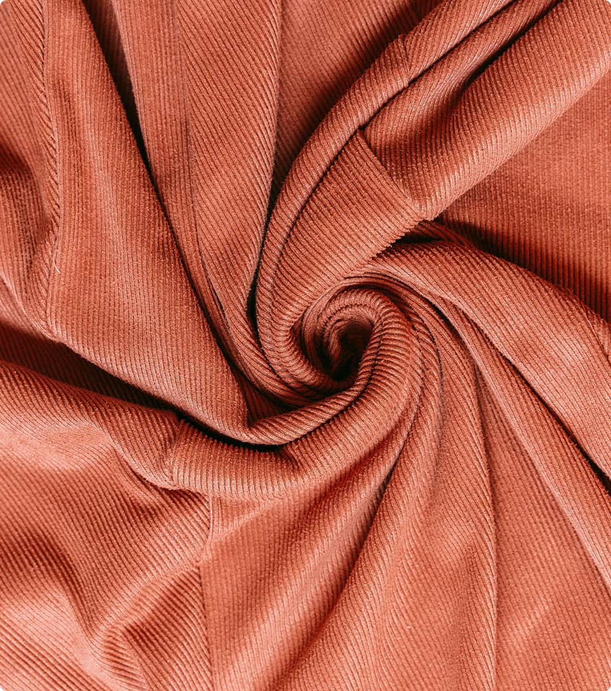

01 / 03Fibra natural
Algodão
Um dos tecidos mais tradicionais e versáteis da indústria têxtil. Produzido com fibras naturais de alta qualidade, garante conforto, durabilidade e excelente desempenho para diferentes tipos de peças.
- 01Maciez
- 02Respirabilidade
- 03Versatilidade
- 04Sustentabilidade
- Preço
- R$ 40,00 / metro
- Venda
- Por metro linear
- Encolhimento
- 5% a 10% na primeira lavagem
